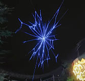
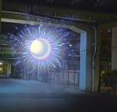

Los Ultraumbrales
Los Ultraumbrales
Un Ultraumbral es un pasaje a través del espacio-tiempo que crea accesos directos para viajar por los diferentes mundos del Ultraespacio. Este concepto fue acuñado por la Fundación Æther en el año 2016, y hasta ahora solo se han registrado dentro de la región de Alola.
  Ultranseúntes
A las personas que cruzan un Ultraumbral se las conoce como ultranseúntes. Estos son bañados con una especie de energía que atrae a los Ultraentes. Cada vez que alguien cruza un Ultraumbral, los Ultraentes fortalecen su ultraimpulso, volviéndose más fuertes. Además, al cruzar un Ultraumbral, es posible que puedan perder la memoria, como le pasó al Dr. Polo y a la señora Destra.
Ultraespacio
El Ultraespacio es un universo alterno y el lugar de donde proceden los Ultraentes. Su acceso desde Alola tiene lugar atravesando el Ultraumbral, que se crea por los Ultraentes o Ultranseúntes.
Debido a la naturaleza del Ultraespacio, solo grandes poderes, como los de Solgaleo, Lunala o los propios Ultraentes, son capaces de crear portales que conectan con el Ultraespacio. A estos portales, con aspecto de grietas que rasgan el propio espacio, se les conoce como Ultraumbrales. Estos espacios contienen las denominadas Ultrahábitats, siendo estos los mundos de procedencia de los distintos Ultraentes.